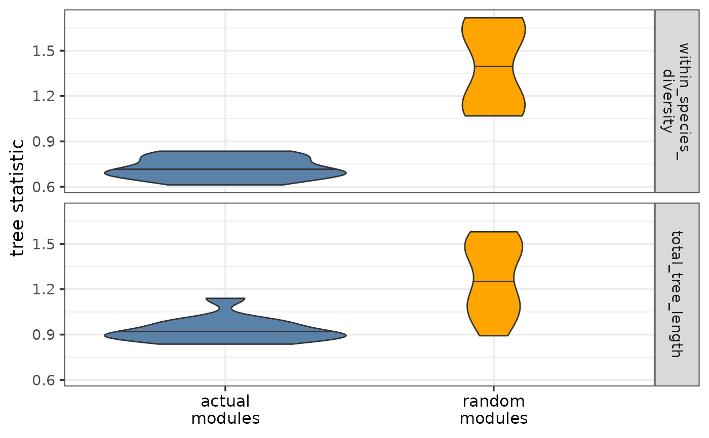

Plot the distributions of tree-based statistics
Source:R/plotTreeStats.R
plotTreeStatDistributions.RdPlots the distribution(s) of the chosen tree-based statistic(s) for the actual and random modules. If the module trees represent well the differences of module topology within and across species, most tree-based statistics are expected to be lower for the actual modules than for the random modules.
Usage
plotTreeStatDistributions(
tree_stats,
random_tree_stats,
stats,
colors = NULL,
font_size = 14
)Arguments
- tree_stats
Data frame of the tree statistics for the actual (pruned) modules. Required columns:
- regulator
Character, transcriptional regulator.
- {{nameOfStat}}
Numeric, one or more columns containing the tree statistic of interest per module and replicate pair.
- random_tree_stats
Data frame of the tree statistics for the random modules. Required columns:
- regulator
Character, transcriptional regulator.
- {{nameOfStat}}
Numeric, one or more columns containing the tree statistics of interest per module and replicate pair.
- stats
Character or character vector, the name(s) of the column(s) containing the statistics of interest.
- colors
Character vector of length 2, the colors for the actual and random modules.
- font_size
Numeric, font size (default: 14).
Value
A violin plot as a ggplot object showing the distributions of the chosen tree-based statistics for both the actual and the random modules.
Details
As part of the CroCoNet approach, pairwise module preservation scores are calculated between replicates, both within and across species (see calculatePresStats) and neighbor-joining trees are reconstructed based on these preservation scores per module (see convertPresToDist and reconstructTrees). The tips of the resulting tree represent the replicates and the branch lengths represent the dissimilarity of module topology between the networks of 2 replicates. Various statistics can be defined based on these trees such as total tree length, overall within-species diversity, and the subtree length and diversity of each species (see calculateTreeStats. These tree-based statistics can then be used to identify conserved/diverged modules (see findConservedDivergedModules) and pinpoint individual target genes within these modules that contribute the most to conservation/divergence (see findConservedDivergedTargets).
Compared to the random modules, the actual modules are expected to be better preserved between replicates and thus the branch lengths of their module trees are also expected to be shorter (especially between replicates of the same species). As a result, most tree-based statistics (especially the ones measuring diversity) are expected to be lower for the actual modules than for the random modules. The function plots the distributions of the chosen tree-based statistics both for the actual and for the random modules and thus allows these expectations to be visually checked. If several different statistics are input, these will be shown as the rows of the faceted plot.
See also
Other functions to plot tree-based statistics:
plotTreeStats()
Examples
plotTreeStatDistributions(tree_stats,
random_tree_stats,
c("within_species_diversity", "total_tree_length"))
